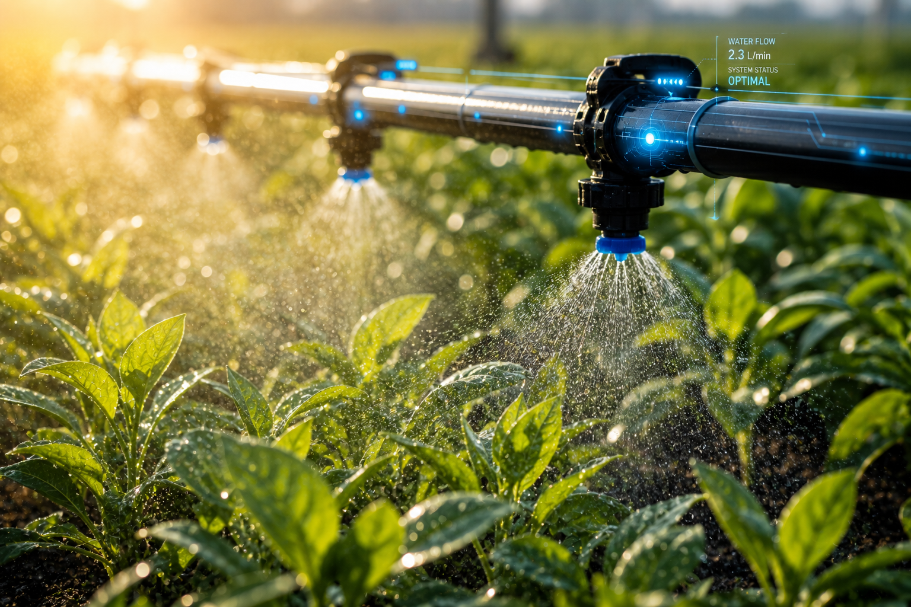
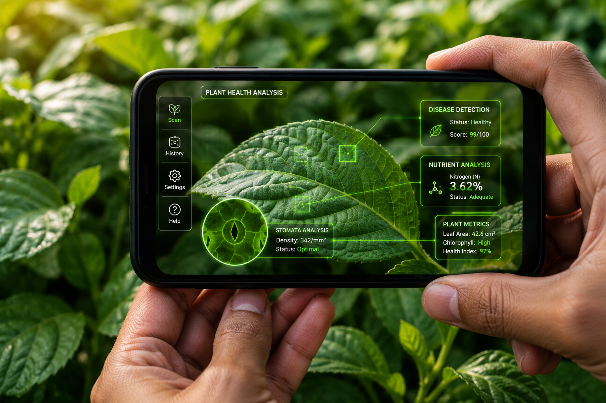
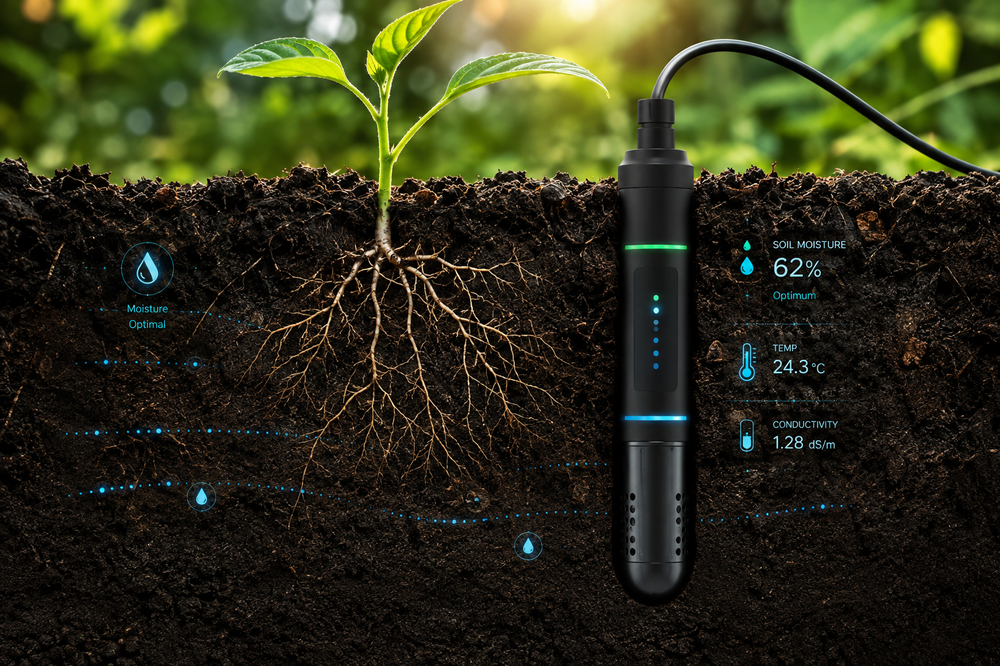
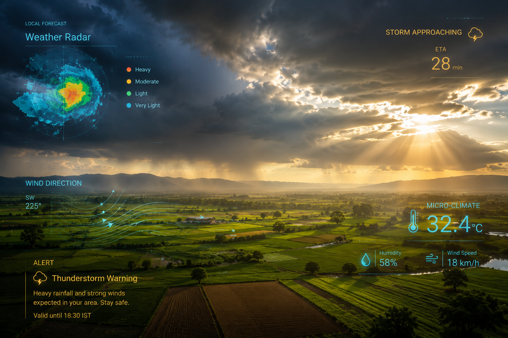

Practical agricultural technology designed to help farmers monitor, understand and manage their fields more efficiently.
Optimize your water usage with intelligent scheduling and real-time soil moisture monitoring. Never over-water or under-water again.

Track the health and growth of your crops continuously. Detect anomalies early before they become widespread problems.

Understand exactly what's happening beneath the surface. Monitor temperature, moisture, and environmental conditions at the root level.

Plan your operations around precise, field-level weather data rather than generic regional forecasts.

Turn seasons of data into actionable insights. Understand field performance and optimize resource usage over time.
Select leaf symptoms observed in your fields to receive instant AI diagnostics & treatment recommendations.
Apply 15kg/ha nitrogen-rich fertilizer & initiate 45-min drip cycle.
Get a personalized walkthrough of the AGROVIA platform and see how it fits your farm.